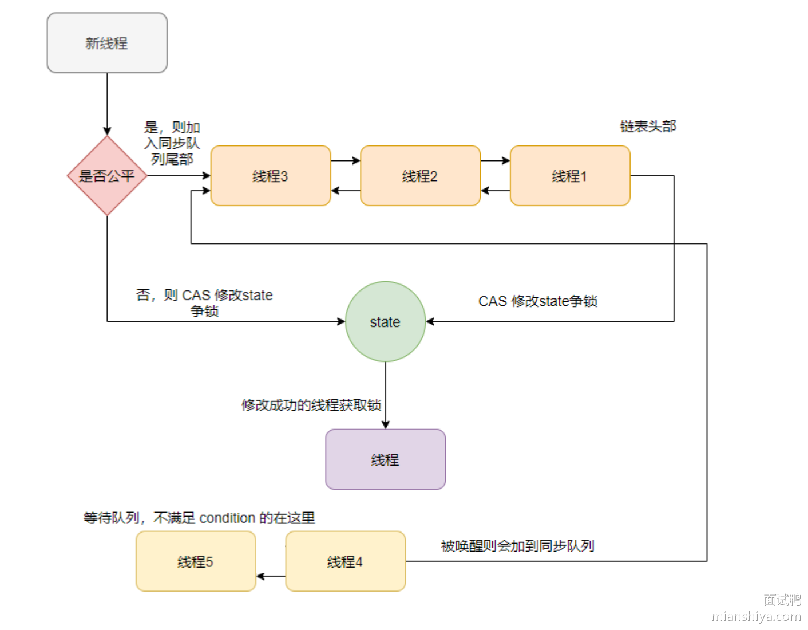

📦 ReentrantLock类
ReentrantLock 是 Java 并发包（java.util.concurrent.locks） 提供的一个可重入锁，比 synchronized 更灵活，支持公平锁、非公平锁、可中断锁、超时获取锁等特性。
📦 ReentrantLock类的常用方法
🔨 构造方法
public ReentrantLock()：// 创建一个非公平锁（默认）public ReentrantLock(boolean fair)：// 创建一个公平锁或非公平锁
🔒 获取锁
public void lock()：阻塞式地获取锁（如果锁被占用，会一直等待）。public boolean tryLock()：尝试获取锁（不会阻塞，获取失败返回false）。public boolean tryLock(long timeout, TimeUnit unit) throws InterruptedException：在指定时间内尝试获取锁，超时返回false。
使用 ReentrantLock 时，锁必须在 try 代码块开始之前获取，并且加锁之前不能有异常抛出，否则在 finally 块中就无法释放锁（ReentrantLock 的锁必须在 finally 中手动释放）。
🔒 判断锁的归属
public boolean isLocked()：判断锁是否被任何线程持有。public boolean isHeldByCurrentThread()：判断锁是否被当前线程持有。
🔒 释放锁
public void unlock()：释放锁
🔧 ReentrantLock 的实现原理
ReentrantLock 是基于 AQS 实现的可重入锁，内部实现依靠一个 state 变量和两个队列：同步队列 和 等待队列。
- 等待队列：条件
condition不满足时候则入等待队列等待，是个单向链表。 - 同步队列：等待争抢锁的线程
线程利用 CAS 修改 state 来争抢锁。争抢不到则入同步队列等待，同步队列是一个双向链表。
是否是公平锁的区别在于：线程获取锁时是加入到同步队列尾部还是直接利用 CAS 争抢锁。

✅ 非公平锁的实现
🔒 获取非公平锁
|
|
- 如果该锁未被任何线程占有，该锁能被当前线程获取
- 如果该锁已经被线程占有了，会继续检查占有线程是否为当前线程
- 如果是的话，同步状态加 1 返回 true，表示可以再次获取成功。每次重新获取都会对同步状态进行加一的操作
🔒 释放非公平锁
|
|
由于锁会被获取 n 次，那么只有锁在被释放同样的 n 次之后，该锁才算是完全释放成功。
💡 总体逻辑
CAS方式尝试将state从0变为1，如果成功，锁被当前线程获取。- 如果失败（锁已被占用），则进入 AQS 同步队列，等待唤醒。
✅ 公平锁的实现
🔒 获取公平锁
|
|
增加了 hasQueuedPredecessors 的逻辑判断，用来判断当前节点在同步队列中是否有前驱节点的
如果有前驱节点，说明有线程比当前线程更早的请求资源，根据公平性，当前线程请求资源失败。
如果当前节点没有前驱节点，才有做后面逻辑判断的必要性。
💡 总体逻辑
- 如果该锁未被任何线程占有，该锁能被当前线程获取
- 再检查
hasQueuedPredecessors()，判断当前线程前面是否有排队的线程- 如果队列为空，才允许当前线程尝试获取锁（严格遵循先来先得）。
- 如果队列中已有等待的线程，即使
state == 0也不能直接获取锁。
- 如果该锁已经被线程占有了，会继续检查占有线程是否为当前线程
- 如果是的话，同步状态加 1 返回 true，表示可以再次获取成功。每次重新获取都会对同步状态进行加一的操作
✅ 底层实现
ReentrantLock 是基于 AQS 实现的可重入锁，内部实现依靠一个 state 变量和两个队列：同步队列 和 等待队列。
- 内部通过一个计数器
state来跟踪锁的状态和持有次数。 - 当线程调用
lock()方法获取锁时，ReentrantLock会检查state的值如果为 0- 通过 CAS 修改为 1，表示成功加锁。
- 否则根据当前线程的公平性策略，加入到等待队列中。
- 线程首次获取锁时，
state值设为 1；如果同一个线程再次获取锁时，state加 1；每释放一次锁，state减 1。 - 如果
state = 0，则释放锁，并唤醒等待队列中的线程来竞争锁。
🔒 ReentrantLock 和 synchronized 的区别
- 用法不同：
synchronized可用来修饰普通方法、静态方法和代码块，而ReentrantLock只能用在代码块上。 - 获取锁和释放锁方式不同：
synchronized会自动加锁和释放锁，当进入synchronized修饰的代码块之后会自动加锁，当离开synchronized的代码段之后会自动释放锁。而ReentrantLock需要手动加锁和释放锁 - 锁类型不同：
synchronized属于非公平锁，而ReentrantLock既可以是公平锁也可以是非公平锁。 - 响应中断不同：
ReentrantLock可以响应中断，解决死锁的问题，而synchronized不能响应中断。 - 底层实现不同：
synchronized是 JVM 层面通过监视器实现的，而ReentrantLock是基于 AQS 实现的。 - 实现多路选择通知 ：
ReentrantLock可以实现多路选择通知（可以绑定多个 Condition），而synchronized只能通过 wait 和notify/notifyAll方法唤醒一个线程或者唤醒全部线程（单路通知）